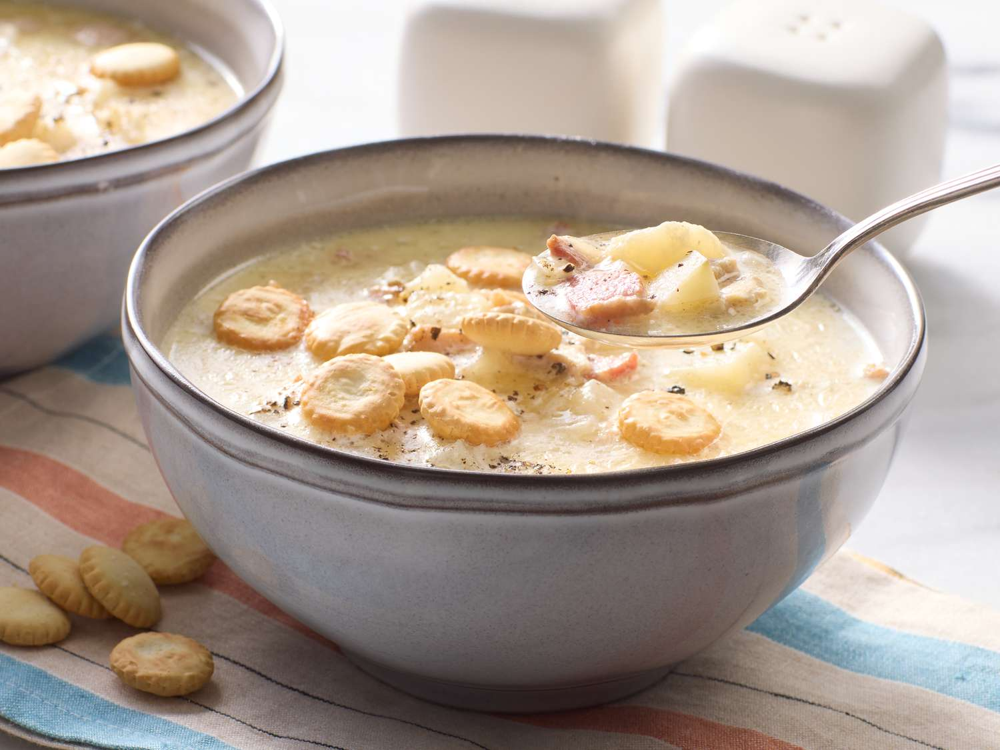

New England Clam Chowder

This Chowder will Transport you to the shores of New England
This is one of our most popular soups and is a staple on the menu at Van Patton Golf Club
This recipe makes almost 2 gallons so its perfect for holiday parties or for gameday parties
Ingredients
- 2 sleeves of bacon
- 1 large white onion
- 1/2 sleave of celery stalks
- 3 tbsp of minced garlic
- 3 bay leaves
- 2 cups of Sherry wine
- 1 quart of heavy cream
- 1 quart of half and half
- Just under 2 cups of flour
- 2 51 oz cans of clams
- 4 large potatos
- Salt and Pepper
Steps
- Dice bacon and put in a large soup pot on meduim low heat
- Whilr bacon is cooking small dice onion,celery and mince garlic
- Once bacon is brown add diced onion and celery
- Once onion is borowned add minced garlic and cook until fragerant
- Add bay leaves
- Deglaze pot with the Sherry
- Let alcohol cook off and then add flour
- Stir in the flour making sure not to burn it
- Add the cans of clams and stir
- Add heavy cream and half and half
- Stir soup and bring to a simmer
- While soup is coming up to a simmer peel the potatos
- Once peeled small dice the potatos
- Once soup is at a simmer put in the potatos
- Add salt and pepper to taste
- Let soup simmer for 20-30 minutes and make sure potatos are cooked before serving